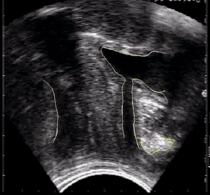
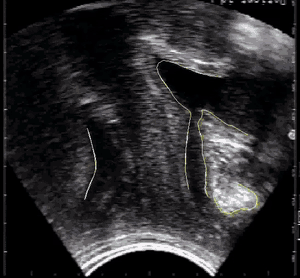
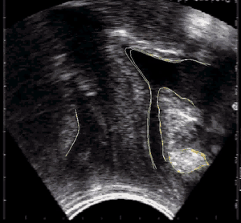
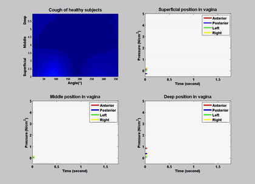
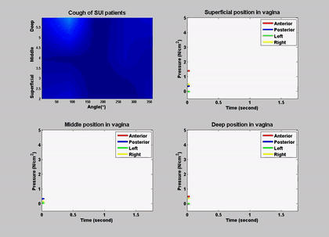
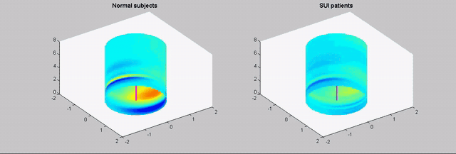

DisplacementIllustrative normalized units
BIOMEDICAL IMAGING · INTERACTIVE EXPLORER
Motion tells a story.
Explore pelvic-floor motion during contraction, cough, and Valsalva—from displacement to velocity and acceleration.
Explore GitHub repository ↗
01 / ORIGINAL RESEARCH ANIMATIONS
Try the motion lab ↓🎬 See it in action
Three functional states, three annotated ultrasound animations from the supplied research repository.



Original annotated clips from the provided repository, not generated by the browser lab. Mentor-owned clinical imaging: confirm permission before publicly publishing or redistributing these animations.
Explore companion pressure animations (3) +



02 / TRY THE BROWSER LAB
Illustrative simulation · not patient dataExplore a motion trace
VelocityFirst numerical derivative
AccelerationSecond numerical derivative
WHAT THE DEMO SHOWS
Press Run motion demo to generate an illustrative trace and its derivatives.
Peak |displacement|—
Peak |velocity|—
Peak |acceleration|—
These mathematically generated traces illustrate analysis methods only. They are not ultrasound measurements, trained predictions, clinical thresholds, or the study's quantitative findings.
03 / RESEARCH CONTEXT
From ultrasound to interpretable motion
Acquire
Perineal ultrasound captures dynamic pelvic-floor anatomy across functional conditions.
Track
Measure displacement of relevant anatomical landmarks over time.
Differentiate
Derive velocity and acceleration from the displacement series.
STUDY MATERIALS
What the supplied presentation reports
The research presentation describes perineal ultrasound using a 5.5 MHz elliptical probe in 23 subjects (mean age 31.1 ± 13.6 years). It discusses voluntary contraction, Valsalva, and cough. The presentation reports urethral support during voluntary contraction and no significant caudal displacement during cough. These statements are from the supplied materials, not conclusions from this browser demo.
23subjects reported
5.5 MHzprobe reported
3test conditions
04 / SOURCES & SCOPE
Research documentation
Project: Functional Imaging of Pelvic Floor Muscles: Ultrasound Scanning of Asymptomatic Subjects. Researcher: Aaryan Samanta. Mentored by Dr. Christos E. Constantinou. This educational companion is not an official Stanford website or a clinical diagnostic tool.
View research repository ↗ Open supplied research presentation PDF ↗This local demo package includes the six animated GIFs from the supplied research repository at the user’s request. The repository identifies mentor-owned clinical imaging and third-party media as rights-restricted. Confirm authorization before publishing the GIFs on a public website. No original computational source code or measurement tables were included in the archive.